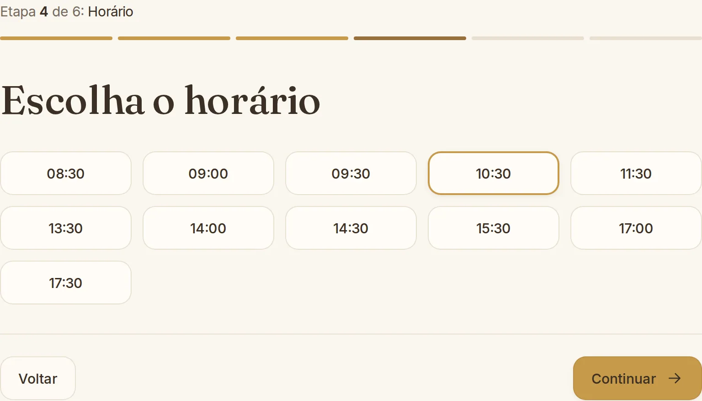
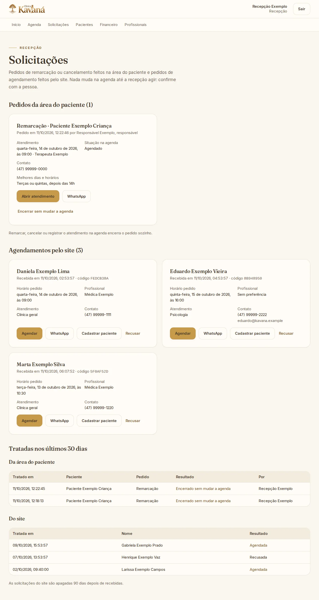
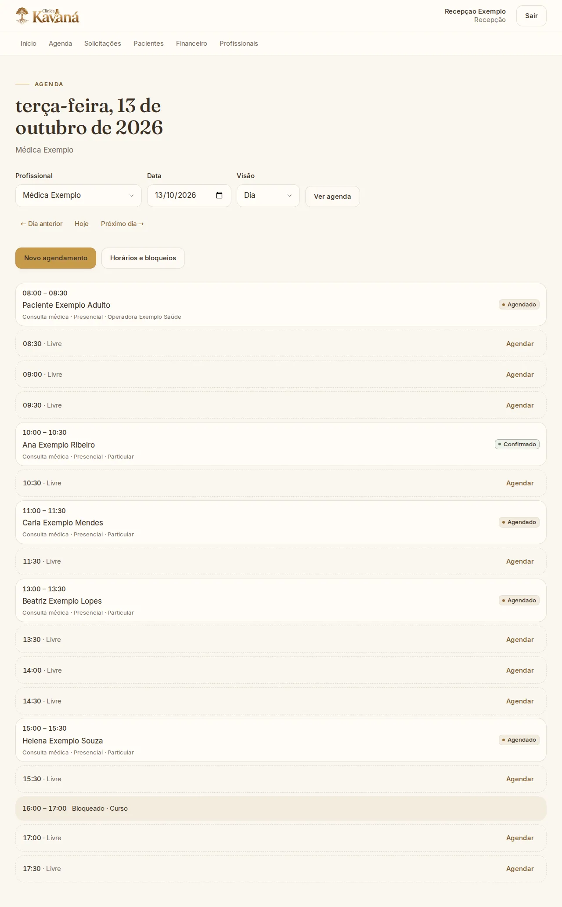
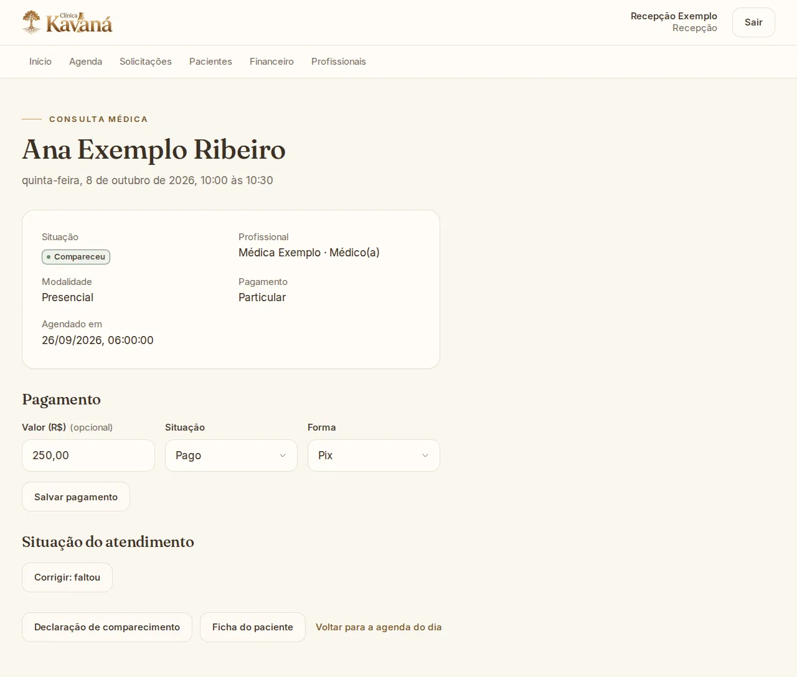
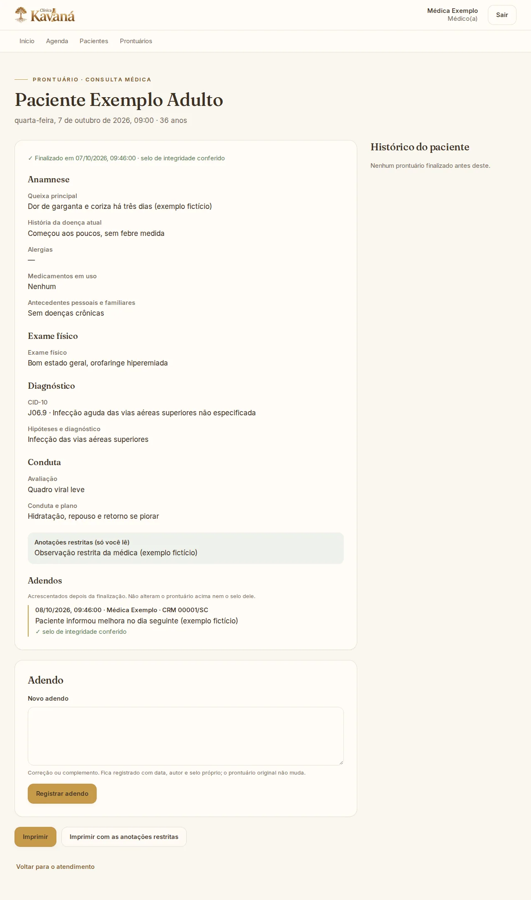
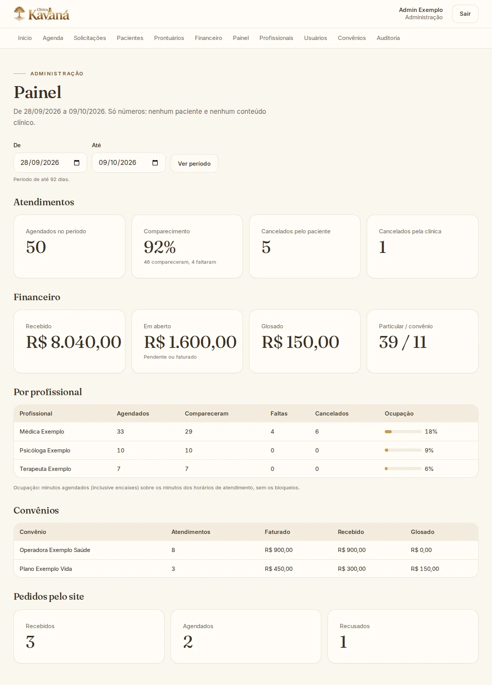

Site da clínica
Apresenta a clínica e recebe pedidos de agendamento com os horários reais da agenda. Com o agendamento online desligado, leva a pessoa ao WhatsApp.
Apresentação do sistema
Site, agenda, prontuários, documentos, gestão e área do paciente, num sistema só.
Outubro de 2026
Telas reais do sistema, com dados fictícios de demonstração.
→ ou espaço para avançar · I índice · F tela cheia · ? atalhos
Visão geral
Os capítulos seguem o caminho de um atendimento, do site à área do paciente. Clique em um deles para ir direto.
Visão geral
O site e as telas da clínica usam a mesma agenda e as mesmas regras. Cada pessoa vê só o que precisa.
Apresenta a clínica e recebe pedidos de agendamento com os horários reais da agenda. Com o agendamento online desligado, leva a pessoa ao WhatsApp.
Recepção, profissionais e administração trabalham na mesma agenda, com prontuários, documentos e financeiro. O paciente acompanha o que é dele.
Permissões por perfil, selo de integridade nos prontuários e documentos, e registro na auditoria de quem abriu o quê.
Visão geral
Do pedido no site ao prontuário selado. Clique em uma etapa para ver as telas dela.

Escolhe atendimento, profissional, dia e horário.

O pedido chega à recepção, sem marcar nada sozinho.

Confirma com a pessoa e marca o horário.

Comparecimento, pagamento e declaração.

Registra, finaliza e o prontuário recebe o selo.

Financeiro e painel, sem nenhum paciente no painel.
Cada etapa acontece numa tela própria, com permissão para cada perfil. As ações importantes ficam registradas na auditoria.
Visão geral
O menu muda com o perfil de quem entra. O que não aparece no menu também é recusado pela API.
Agenda, pedidos do site, pacientes, financeiro e profissionais. Não abre prontuários.
A própria agenda, os pacientes com atendimento marcado e os prontuários desses pacientes.
Tudo da recepção, mais painel, usuários, convênios e auditoria. Lê a parte compartilhada dos prontuários, com registro.
Os próprios atendimentos, documentos e dados, numa área separada, com entrada por CPF.
Capítulo 1
Apresenta a clínica e recebe pedidos de agendamento com os horários reais da agenda.
Site da clínica
O site apresenta a clínica, as especialidades e a equipe, e leva ao agendamento. Funciona no computador e no celular.
Agendar consulta fica sempre no topo e abre o agendamento em seis etapas.
WhatsApp da clínica em todas as páginas, para quem prefere conversar.
Os textos, as fotos e o contato do site são os que a clínica aprovou para o site.
Site da clínica
Seis etapas curtas. A pessoa pode voltar e mudar qualquer escolha antes de confirmar. Clique nas etapas.
Site da clínica
O site não inventa vagas: calcula na hora, a partir da agenda de cada profissional.
Horário escolhido. A lista conta o horário de atendimento, a duração usual, os atendimentos marcados e os bloqueios.
Site da clínica
A pessoa autoriza o contato e recebe um código. Quem marca é a recepção, depois de falar com ela.
Autorização de contato, guardada com a versão do texto aceito (site-v1).
Só fica marcado depois da confirmação da recepção, por ligação ou WhatsApp.
Telefone usado só para a clínica confirmar o atendimento.
Código da solicitação, para a recepção achar o pedido.
Site da clínica
O agendamento pelo site começa desligado. Quando a clínica quiser, é só ligar. Experimente o interruptor.
Ligado: o pedido entra direto na lista da recepção, com os horários reais da agenda e um código para a pessoa.
Desligado (padrão): a pessoa escolhe o horário e o site abre o WhatsApp da clínica com a mensagem pronta.
A troca é uma configuração do servidor: o site e as telas não mudam.
Capítulo 2
Agenda, pedidos do site, cadastro, comparecimento, pagamento e declarações.
Acesso
Cada pessoa da equipe tem o próprio acesso. O perfil define o que ela vê.
E-mail pessoal: nada de acesso compartilhado.
Senha protegida com Argon2; nunca fica guardada em texto.
Tentativas limitadas: 5 erros em 15 minutos pausam a conta.
Recepção · Agenda
Atendimentos, horários livres e bloqueios de cada profissional, na ordem do dia.
Profissional, dia e visão (dia ou semana).
Cada atendimento: paciente, tipo, modalidade, pagamento e situação.
Horário livre: um clique abre o agendamento já preenchido.
Bloqueio (curso, férias): some da agenda e do site.
Recepção · Agenda
A visão da semana mostra o ritmo da agenda: sessões semanais, bloqueios e a situação de cada atendimento.
Dia ou semana, com o mesmo filtro de profissional.
Bloqueio no dia (aqui, supervisão clínica).
Situação: agendado, confirmado, compareceu, faltou ou cancelado.
Recepção · Agenda
Do horário livre ao atendimento marcado em uma tela, com particular ou convênio.
Paciente encontrado por nome ou CPF.
Dia, horário e duração, com a duração usual do profissional.
Particular ou convênio, com a carteirinha do paciente.
Encaixe: fora do horário de atendimento só quando a recepção escolhe.
O banco de dados não aceita dois atendimentos do mesmo profissional no mesmo horário, nem com dois cliques ao mesmo tempo.
Recepção · Site
Os pedidos feitos no site esperam aqui. Nada fica marcado até a recepção agendar.
O pedido: horário, profissional, atendimento e contato.
Agendar abre a agenda já com o horário pedido.
WhatsApp com a mensagem pronta.
Cadastrar paciente com o nome e o telefone do pedido.
Tratadas nos últimos 30 dias: quem respondeu e o que virou.
Os pedidos são apagados 90 dias depois de recebidos.
Recepção · WhatsApp
O sistema abre o WhatsApp da recepção com a mensagem escrita. Quem envia é a recepção, do número da clínica: não há envio automático.
Os textos são provisórios: a clínica ajusta como preferir.
Recepção · Pacientes
Os dados que a clínica precisa, sem excessos, com cuidado para nome social e menores de idade.
Nome social: quando existe, é o nome que aparece no sistema.
CPF validado e obrigatório a partir dos 18 anos.
Menor de idade: o responsável legal entra com CPF, telefone e vínculo.
Recepção · Pacientes
Tudo o que é administrativo num lugar só. A ficha não mostra conteúdo clínico.
Dados e idade calculada.
Atendimentos passados e futuros.
Documentos emitidos e o botão para emitir um novo.
Convênios: carteirinhas com plano e validade.
Consentimentos com a versão do termo; revogar não apaga o histórico.
Recepção · Atendimento
Confirmar, remarcar ou cancelar, sempre com quem fez e quando.
Situação: agendado ou confirmado.
Cancelado pelo paciente ou pela clínica: o horário volta a ficar livre.
Comparecimento e falta só a partir do horário de início.
Confirmar pelo WhatsApp com a mensagem pronta.
Remarcar ou alterar horário, profissional ou pagamento.
Recepção · Atendimento
Comparecimento, pagamento e declaração na mesma página.
Compareceu: marcado pela recepção ou ao finalizar o prontuário.
Pagamento: valor, situação e forma (Pix, cartão, dinheiro ou transferência).
Correção possível, e registrada na auditoria.
Declaração de comparecimento em um clique.
Recepção · Documentos
Diz só que a pessoa esteve na clínica "para atendimento": nunca a especialidade, como psicologia.
Número sequencial do ano, único para todos os documentos.
Cópia arquivada no sistema, com selo de integridade.
No dia a dia
As mesmas telas se ajustam à tela pequena, sem rolagem para os lados.
Site
Agenda do dia
Solicitações do site
Prontuário
Área do paciente
Capítulo 3
A agenda, o prontuário com CID-10, o selo, os adendos, a impressão e os documentos.
Profissional · Agenda
Cada profissional vê só a própria agenda e os próprios pacientes. Marcar e desmarcar fica com a recepção.
Atendimento: abre a página do atendimento e, dela, o prontuário.
Profissional · Prontuário
Seções da consulta médica, salvas sozinhas enquanto a médica escreve.
Anamnese, exame físico, diagnóstico e conduta, em seções.
CID-10 escolhido na tabela oficial.
Salvo sozinho, com a hora do último salvamento.
Anotações restritas: só a autora lê.
Finalizar sela o prontuário.
Profissional · Prontuário
A tabela oficial do DATASUS, pesquisável por código ou por nome.
Código ou nome, com ou sem acento: "cefale" já encontra.
Resultados da tabela CID-10 oficial, escolhidos com o teclado ou o mouse.
Na consulta médica, o CID é obrigatório para finalizar.
Profissional · Prontuário
Depois de finalizado, o prontuário não muda mais. O selo mostra que nada foi alterado.
Finalizado com data e hora; o selo é conferido sempre que o prontuário abre.
Anotações restritas, visíveis só para a autora.
Adendos depois da finalização.
Imprimir com ou sem as anotações restritas.
Profissional · Prontuário
Uma correção ou um complemento entra como adendo, com selo próprio. O prontuário original continua igual.
Adendo com data, autora, registro no conselho e selo conferido.
Novo adendo: o texto entra abaixo, sem mexer no que já foi finalizado.
Profissional · Prontuário
Pronta para imprimir ou salvar em PDF pelo navegador, com a identidade da clínica.
Identificação do paciente, do atendimento e da profissional, com o registro no conselho.
Finalização e selo impressos.
Assinatura e carimbo.
Rodapé: quem imprimiu e quando.
Até a assinatura digital ICP-Brasil (próximos passos), a clínica imprime e assina à mão.
Profissional · Prontuários
A médica lê a parte compartilhada dos outros profissionais do paciente (a psicóloga, por exemplo) e tudo o que é dela.
Busca por nome ou CPF.
Tratamentos de psicologia e terapia do paciente.
Prontuários finalizados de cada paciente.
Exportar em PDF, com ou sem as próprias anotações restritas.
Profissional · Prontuários
O prontuário completo do paciente em um documento, com tratamentos e cada atendimento em ordem.
Role a tela ao lado com o mouse para ver o documento inteiro.
Profissional · Documentos
Atestado, receita, relatório, declaração e relatório de cobrança, com número e cópia arquivada.
Capítulo 4
Processos e tratamentos com sessões, duas camadas de registro e encerramento selado.
Psicologia
Abertura, sessões e encerramento, como pede a Resolução CFP 001/2009.
Abertura: avaliação da demanda e objetivos do trabalho.
Registro documental restrito: só a psicóloga autora lê.
Sessões do processo, cada uma com o seu registro.
Encerrar ou encaminhar, com motivo e registro.
Psicologia
A sessão mostra o processo a que pertence e guarda a evolução e os procedimentos.
Registro restrito do processo, visível só para a autora.
Evolução e procedimentos da sessão.
Finalizada com selo de integridade.
Psicologia
O mesmo processo, visto pela autora e pela administração. Troque a visão.
A autora vê a abertura, as sessões e o registro documental restrito, que só ela lê.
A administração vê só a parte compartilhada. O registro restrito não aparece, e a leitura entra na auditoria.
Outros profissionais do paciente também leem só a parte compartilhada.
Psicologia
Encerrado, o processo não muda mais. Se a pessoa voltar, abre-se um novo.
Encerrado, com as sessões do processo.
Motivo e registro: alta, encaminhamento, interrupção ou outro.
Selo do processo inteiro, conferido a cada abertura.
Psicologia
Declaração e relatório psicológico com número, finalidade e destinatário (Resolução CFP 06/2019).
Terapias
O mesmo cuidado para as terapias: abertura, sessões, anotações restritas e encerramento.
Abertura: avaliação inicial e plano terapêutico.
Anotações restritas da terapeuta.
Encerrar ou encaminhar, com selo.
Diagnóstico só nas áreas com conselho (fisioterapia, terapia ocupacional, fonoaudiologia). Nas terapias integrativas, não.
Capítulo 5
Painel, financeiro, equipe, horários, usuários, convênios e auditoria.
Administração
Só números: nenhum nome de paciente e nenhum dado clínico. Aqui, duas semanas de demonstração.
Comparecimento e faltas do período.
Financeiro: recebido, em aberto e glosado.
Por profissional, com a ocupação da agenda.
Pedidos pelo site: recebidos, agendados e recusados.
Recepção e administração
Atendimentos com comparecimento ou falta no período, particulares e por convênio.
Filtros por período, profissional, tipo e situação.
Totais: recebido e em aberto.
Glosa do convênio, à vista.
Falta com o valor pendente.
Valor e pagamento são registrados na página de cada atendimento.
Administração · Equipe
O cadastro de cada profissional define o prontuário que ele usa e o que aparece no site.
Profissão e, nas terapias, a área.
Registro no conselho (CRM, CRP, CREFITO, CRFa): obrigatório para finalizar prontuários.
Pedidos pelo site: só quem a administração libera aparece no agendamento online.
Perfil do site: liga o profissional à foto publicada no site.
Administração · Agenda
A base de tudo: dos horários de cada profissional saem a agenda e as vagas do site.
Duração usual: divide os horários em vagas.
Períodos de atendimento por dia da semana.
Bloqueios de um período (curso, férias).
Motivo administrativo, nunca informação de saúde.
Um bloqueio nunca esconde um atendimento: antes, a recepção remarca ou cancela.
Administração · Acessos
A administração cria o acesso; a pessoa escolhe a própria senha no primeiro acesso.
Senha provisória mostrada uma vez só, para entregar à pessoa.
Troca obrigatória no primeiro acesso. Perfis: administração, recepção e profissional.
Administração · Convênios
As operadoras que a clínica atende, ligadas a cada etapa.
Administração · Auditoria
Quem fez o quê e quando, para responder a qualquer pergunta sobre os dados.
Nenhum conteúdo clínico: só quem, quando e o quê.
Leituras sensíveis registradas: ficha do paciente, prontuários, tratamentos e exportações.
O paciente também aparece: entradas e documentos abertos na área do paciente, com o nome dele.
Capítulo 6
O paciente vê os próprios atendimentos e documentos, com o acesso criado pela recepção.
Área do paciente · Recepção
Na ficha do paciente, um clique cria o acesso. Ninguém se cadastra sozinho pelo site.
Senha provisória mostrada uma vez, para entregar ao paciente.
Convite pelo WhatsApp com o link e a senha, sem o CPF: uma mensagem no número errado não abre nada sozinha.
Nova senha provisória quando o paciente esquecer a dele; as sessões abertas terminam.
Desativar o acesso a qualquer momento.
Por enquanto, só para maiores de idade com CPF no cadastro. O acesso do responsável legal vem numa próxima etapa.
Área do paciente
Uma entrada própria, separada da equipe: outro endereço, outra sessão, outras permissões.
CPF com ou sem pontos, e a senha.
Senha própria no primeiro acesso: a provisória não abre mais nada.
Sem cadastro aberto: o acesso vem da recepção.
Mesmas proteções da equipe: 5 erros em 15 minutos pausam o acesso, e a sessão termina sozinha.
Área do paciente
O que importa logo na entrada: o próximo atendimento e os documentos mais recentes.
Próximos atendimentos, com profissional, modalidade e situação.
Documentos recentes, prontos para abrir.
Remarcar ou cancelar continua com a recepção, pelo WhatsApp.
Área do paciente
Os próximos e os anteriores, com a situação e o pagamento de cada um.
Próximos: confirmado ou agendado.
Anteriores: compareceu, faltou ou cancelado, com o valor e se foi pago.
Nenhum conteúdo clínico aqui: só data, profissional, modalidade, situação e pagamento.
Área do paciente
Declarações, atestados, receitas e relatórios emitidos para o paciente: a mesma cópia arquivada e selada que a clínica guarda.
Área do paciente
Os dados do cadastro, os termos assinados e a troca de senha.
Dados só para leitura: correções passam pela recepção.
Termos assinados, com a versão e a data (LGPD).
Trocar senha encerra as sessões abertas em outros aparelhos.
Capítulo 7
Quem vê o quê, o selo de integridade e a privacidade desde o desenho.
Segurança e LGPD
A API confere cada pedido pelo perfil de quem está entrando. Escolha um perfil.
| Recepção | Médico(a) | Psicólogo(a) | Terapeuta | Administração | Paciente | |
|---|---|---|---|---|---|---|
| Agenda | ✓Todas; marca e altera | A própria | A própria | A própria | ✓Todas; marca e altera | Os próprios atendimentos |
| Pedidos do site | ✓Responde | — | — | — | ✓Responde | — |
| Cadastro do paciente | ✓Todos | Os próprios pacientes | Os próprios pacientes | Os próprios pacientes | ✓Todos | Os próprios dados, só leitura |
| Prontuário: parte compartilhada | — | Dos próprios pacientes | Dos próprios pacientes | Dos próprios pacientes | Lê, com auditoria | — |
| Anotações restritas | — | Só as próprias | Só as próprias | Só as próprias | — | — |
| Documentos | Sem conteúdo clínico | Dos próprios pacientes | Dos próprios pacientes | Dos próprios pacientes | ✓Todos | Os emitidos para ele |
| Financeiro | ✓Registra pagamentos | — | — | — | ✓Todos | Os próprios pagamentos |
| Painel, usuários e auditoria | — | — | — | — | ✓Só a administração | — |
Segurança e LGPD
Ao finalizar, o sistema calcula um selo com uma chave secreta do servidor. Se uma letra mudar, o selo não confere. Experimente.
Selo guardado na finalização
…
Selo calculado agora
…
Segurança e LGPD
Coletar só o necessário, guardar com cuidado e registrar o acesso.
Atendimento, dados, teleatendimento e IA, cada um com a versão aceita. Revogar não apaga o histórico.
Nome, telefone e horário pedido, apagados 90 dias depois de recebidos.
Argon2, tentativas limitadas e sessão que termina sozinha: 2 horas sem uso, 12 horas no máximo.
O IP de quem usa o site é guardado só como código (HMAC), para limitar abusos.
Registra quem abriu, exportou ou alterou, nunca o que estava escrito.
O navegador fala só com o site; o servidor do site fala com a API, a única porta para os dados.
A política de segurança do navegador (CSP) só deixa carregar recursos do próprio site. Sem rastreadores.
Paciente real só depois da revisão jurídica, do backup pago e da verificação em duas etapas.
Segurança e LGPD
Cada camada tem um papel. Os dados só passam pela API, que confere quem pede e o que pode ver.
Uma clínica só, sem dados de outras empresas no mesmo banco. Integrações externas (vídeo, IA, assinatura) entram uma a uma, com aprovação.
Qualidade
O sistema foi construído em etapas pequenas, cada uma conferida antes da seguinte.
Capítulo 8
O portão para os dados reais, as próximas etapas e o que a clínica decide.
Próximos passos
Até aqui, tudo funciona com dados fictícios. Paciente real só entra depois destes quatro passos.
Termos de consentimento, política de privacidade, retenção dos dados e contratos com fornecedores.
Cópias automáticas do banco, com uma restauração conferida antes de começar.
Um segundo fator no login de todos os perfis.
Site e sistema no ar, com domínio e monitoramento. O primeiro administrador entra por um script, com a senha digitada só no terminal.
Enquanto o portão não abre, a demonstração usa só dados fictícios, como os desta apresentação.
Próximos passos
Já planejadas e prontas para começar quando a clínica escolher os fornecedores.
Próximos passos
Escolhas feitas durante o desenvolvimento que dependem da palavra da clínica.
Perguntas, ajustes e próximos passos: vamos conversar.
Telas reais · dados fictícios de demonstraçãoClique ou Esc para fechar